Home / Past papers / MLT Quiz 1 / this paper
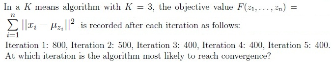
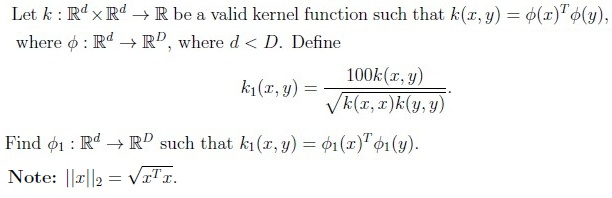
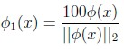
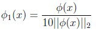
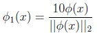
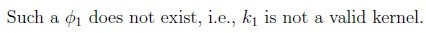
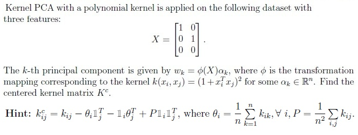
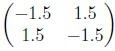
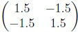
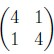
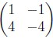
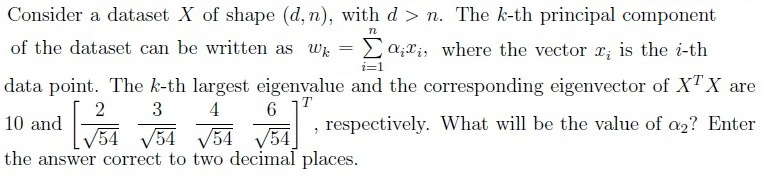
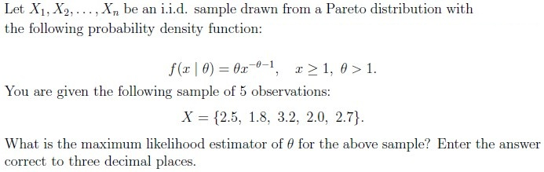
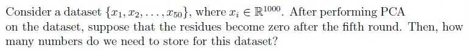
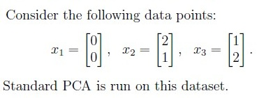
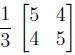
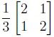
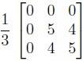
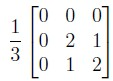
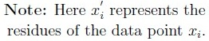
Find the residues after projecting the data points onto the first principal component.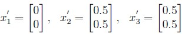
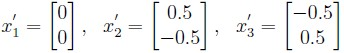
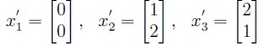
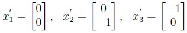
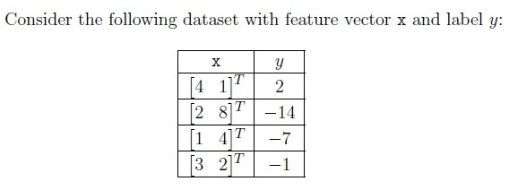
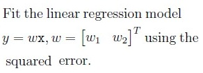
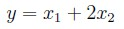
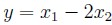
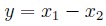
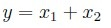
Auto-generated summary from the source site. Handy as a checklist; the lessons above explain each idea from scratch.
K-means Algorithm: Iterative algorithm that partitions data into K clusters by minimizing the sum of squared distances to the centroids.
Kernel Transformation: Techniques to transform data into higher-dimensional spaces to make it easier to separate.
Gradient Descent: Optimization algorithm to minimize some function by iteratively moving in the direction of steepest descent.
Principal Components: Directions in the data that have the largest variance.
Pareto Distribution: Probability density function .
Model: